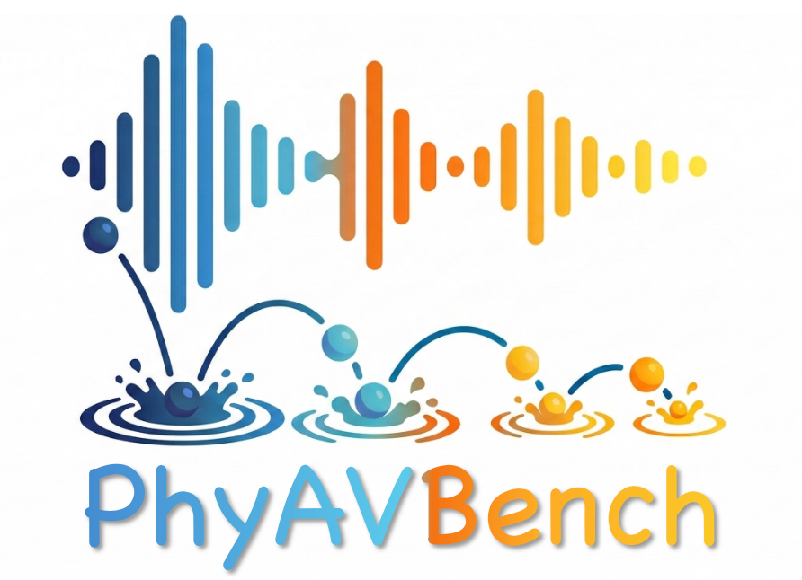
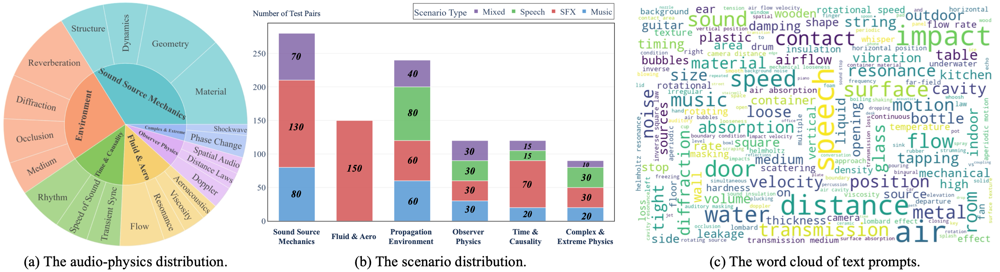
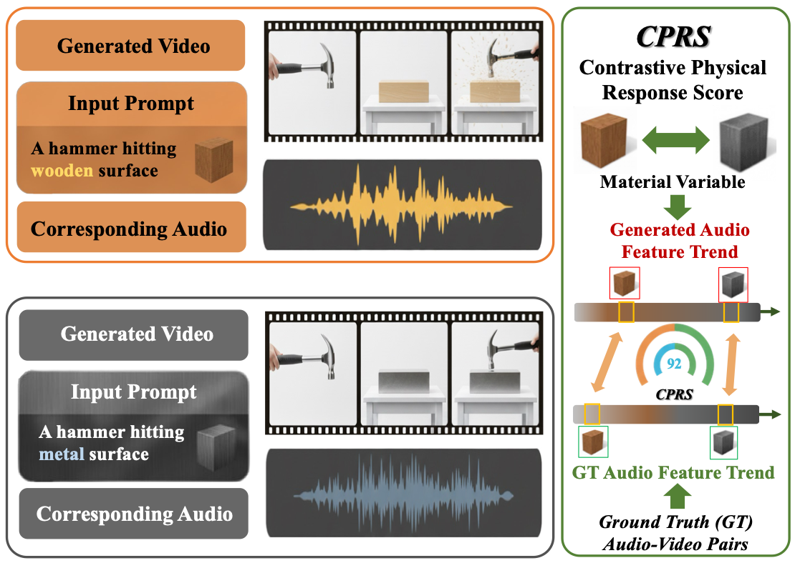
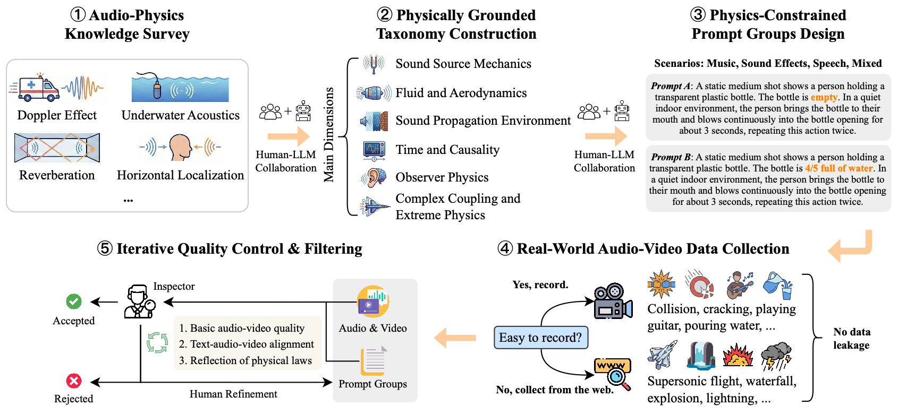

Text-to-audio–video (T2AV) generation underpins a wide range of applications demanding realistic audio-visual content, including virtual reality, world modeling, gaming, and filmmaking. However, existing T2AV models remain incapable of generating physically plausible sounds, primarily due to their limited understanding of physical principles and the lack of dedicated datasets. To situate current research progress, we present PhyAVBench, a challenging audio physics-sensitivity benchmark designed to systematically evaluate the audio physics grounding capabilities of existing T2AV models. PhyAVBench comprises 1,000 groups of paired text prompts with controlled physical variables that implicitly induce directional sound variations, enabling a fine-grained assessment of models' sensitivity to changes in underlying acoustic conditions. We term this evaluation paradigm the Audio-Physics Sensitivity Test (APST). Unlike prior benchmarks that primarily focus on audio-video synchronization, PhyAVBench explicitly evaluates models' understanding of the physical mechanisms underlying sound generation, covering 6 major audio physics dimensions, 4 daily scenarios (music, sound effects, speech, and their mix), and 50 fine-grained test points, ranging from fundamental aspects such as sound diffraction and reverberation to more complex phenomena, e.g., vortex shedding and Helmholtz resonance. Each test point consists of multiple groups of paired prompts, where each prompt is grounded by at least 20 newly recorded or collected real-world videos, thereby minimizing the risk of data leakage during model pre-training. Both prompts and videos are iteratively refined through rigorous human-involved error correction and quality control to ensure high quality. We argue that only models with a genuine grasp of audio-related physical principles can generate physically consistent audio-visual content. We hope PhyAVBench will stimulate future progress in this critical yet largely unexplored domain.



Close-up shot, static camera. A hand taps the wooden table repeatedly and slowly using the tip of a ballpoint pen. Indoor.
m01_c03_t08_s02_g009_A01
Close-up shot, static camera. A hand taps the wooden table repeatedly and quickly using the tip of a ballpoint pen. Indoor.
m01_c03_t08_s02_g009_B01
Close-up, static camera. An index finger slowly and repeatedly presses the spacebar of a mechanical keyboard multiple times. Other keys remain still. Indoor.
m01_c03_t08_s02_g011_A01
Close-up, static camera. An index finger quickly and repeatedly presses the spacebar of a mechanical keyboard multiple times. Other keys remain still. Indoor.
m01_c03_t08_s02_g011_B01
Close-up, static camera. Water flows into a cup at a slow, gentle rate. Indoor.
m02_c05_t14_s02_g004_A01
Close-up, static camera. Water flows into a cup at a fast, strong rate. Indoor.
m02_c05_t14_s02_g004_B01
Close-up shot, static camera focused on a retractable ballpoint pen held in one hand; the thumb presses and releases the top button with aperiodic, irregular timing; indoor, quiet.
m05_c18_t45_s02_g006_A01
Close-up shot, static camera focused on a retractable ballpoint pen held in one hand; the thumb presses and releases the top button with periodic, regular timing; indoor, quiet.
m05_c18_t45_s02_g006_B01
Close-up, static camera. An index finger clicks the left mouse button repeatedly with irregular, aperiodic timing. Indoor.
m05_c18_t45_s02_g020_A01
Close-up, static camera. An index finger clicks the left mouse button repeatedly with regular, periodic timing. Indoor.
m05_c18_t45_s02_g020_B01